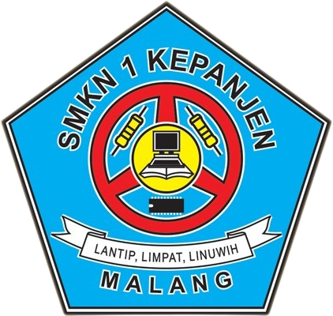

|  |
SMK NEGERI 1 KEPANJEN |
Profile Sekolah | Profile Jurusan | Pendaftaran |
SMK Negeri 1 Kepanjen (Kanesa) adalah sekolah menengah kejuruan negeri yang berlokasi di
Jl. Kedungpedaringan, Kepanjen, Kabupaten Malang, Jawa Timur. Sekolah ini dikenal sebagai
salah satu SMK unggulan di Jawa Timur dengan lingkungan belajar yang kondusif, fasilitas
lengkap, serta tenaga pengajar profesional. Dengan motto LANTIP, LIMPAT, LINUWIH (Lugas,
Terampil, dan Berwawasan Lingkungan), SMKN 1 Kepanjen berkomitmen untuk mencetak lulusan
yang tidak hanya memiliki kompetensi teknis, tetapi juga karakter yang kuat dan mampu
bersaing di dunia kerja maupun melanjutkan pendidikan.
.jpg) |
SMK Negeri 1 Kepanjen menawarkan lima program keahlian unggulan: |